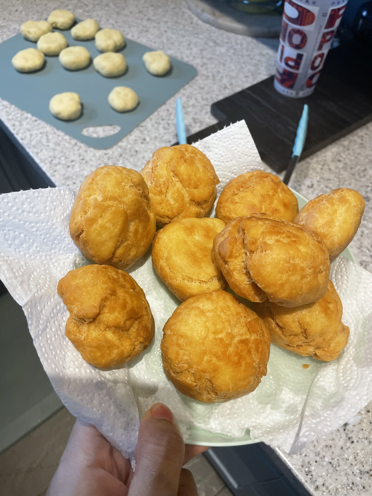

Fried Dumplings
Home

Traditional Jamaican side dish, often paired with ackee and saltfish. Fried dumplings are best served warm.
Ingredients
- All-purpose flour
- Salt
- Baking powder
- Butter
- Room temperature water
- Oil
Steps
- Add oil to a pan and set to medium heat.
- Mix all the dry ingredients. Whisk the flour, baking powder and salt.
- Add the butter into the flour mixture and mix until it forms a crumb-like texture.
- Add the water into the dough mixture. A little each time until the dough holds together.
- Knead the dough. Let the dough rest for at least 10 minutes.
- Form the dumplings. Roll small round portions of the dough into balls.
Use your palm to slightly flatten each ball
- Fry the dumplings. Place a few balls in the oil at a time and cook for about 6 to 8 minutes.
Flip at the halfway point until they're golden brown.
- Drain the oil. Transfer the cooked dumplings to a plate lined with paper towels.